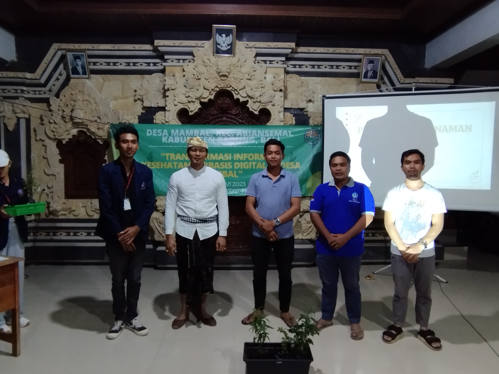

Program Kerja "Sosialisasi Tanaman Obat Keluarga (TOGA)" telah berhasil
dilaksanakan pada tanggal 3 September 2023 dan berjalan dengan sukses. Kegiatan ini
mengusung tema "Usadha Taru Pramana Dalam Penanganan Penyakit Hipertensi"
dengan tujuan utama meningkatkan kesadaran remaja dan masyarakat setempat tentang peran
penting tanaman obat dalam menjaga kesehatan keluarga.
Usadha Taru Pramana mengacu pada konsep "Usada" (obat) yang berasal dari
tumbuhan yang memiliki potensi untuk digunakan sebagai obat, sedangkan "Taru
Pramana" menggambarkan kekuatan dan khasiat tumbuhan tersebut. Dalam literatur
lontar Usadha Taru Pramana, terdapat beragam jenis tanaman yang secara tradisional
digunakan dalam pengobatan di Bali. Dalam Sosialisasi ini, penekanan diberikan pada
peran Usadha Taru Pramana dalam penanganan penyakit hipertensi. ...
Hipertensi didefinisikan sebagai kondisi tekanan darah sistolik yang sama dengan atau
melebihi 140 mmHg dan/atau tekanan darah diastolik yang sama dengan atau melebihi 90
mmHg. Penyakit ini memiliki dua faktor risiko, yaitu faktor yang tidak dapat
dimodifikasi dan faktor yang dapat dimodifikasi.
Resiko yang tidak dapat dimodifikasi:
• umur
• jenis kelamin
• riwayat keluarga (genetik)
Resiko yang dapat dimodifikasi:
• kegemukan (obesitas)
• merokok
• kurang aktivitas fisik
• diet tinggi lemak
• konsumsi garam berlebih
• dislipidemia
• konsumsi alkohol berlebih
• psikososial dan stres
Adapun aturan yang dapat dilakukan seperti menjaga pola makan dengan:
• batasi konsumsi gula <50 gram (4 sdm per hari)
• batasi garam <5 gram (1 sendok teh) per hari
• kurangi garam saat memasak
• batasi makanan olahan cepat saji
• batasi daging berlemak dan minyak goreng (<5 sendok makan per hari)
• makan ikan sedikitnya 3 kali per minggu
Tips mengontrol Hipertensi:
1. Ketahui tekanan darah anda (tekanan darah normal sebesar 120/80 mmHg)
2. Kontrol tekanan darah anda secara teratur
3. Tekanan darah tinggi sering tanpa gejala
4. Tekanan darah yang tidak terkontrol akan menimbulkan komplikasi
5. Pastikan ketersediaan obat di rumah
6. Obat penting untuk menjaga tekanan darah anda
7. Minum obat teratur dan sesuai aturan dokter
8. Ketahui efek samping obat yang anda minum
9. Berhati-hati menggunakan obat bebas
Gejala dari Penyakit Hipertensi:
sebagian besar penderita tidak menimbulkan gejala sedangkan jika hipertensinya berat
atau menahun dan tidak diobati, bisa timbul gejala sebagai berikut:
• sakit kepala
• kelelahan
• mual dan muntah
• sesak nafas
• gelisah
• pandangan menjadi kabur
Beberapa Tanaman Dalam Usadha Taru Pramana sebagai Obat Hipertensi:
1. Binahong
• Khasiat: antihipertensi, antioksidan, vasorelaksan
• Kandungan Zat Kimia: apigenin, asam ursolat, asam oleanolik
• Bagian yang digunakan: daun dewasa
• Pengolahan: 8 daun binahong direbus dalam 2 gelas air rebusan diminum. Diminum sehari
1-2 kali
2. Bawang Putih/Kesuna
• Khasiat: antihipertensi, antioksidan, antiproliferatif, antikolesterol
• Kandungan Zat Kimia: aliicin, diallyl trisulfide, dimethyl disulphide,
S-allyl-L-cysteine
• Bagian yang digunakan: siung dewasa, siung tunggal
• Pengolahan:
• siung dikonsumsi langsung
• siung dikukus, dimakan sehari 2 siung
• siung direbus, air rebusan diminum
3. Seledri
• Khasiat: vasorelaksan, penghambat saluran kalsium, penghilang mual
• Kandungan Zat Kimia: apigenin, 3-n-buthylphthali de, kaempferol, luteolin
• Bagian yang digunakan: daun dewasa dengan batangnya
• Pengolahan:
• daun dikonsumsi langsung
• dibuat dalam bentuk jus seledri : empat batang dibuat dalam 1 cangkir kecil
4. Serai/Sereh
• Khasiat: antihipertensi, vasorelaksasi, penghambat jalur kalsium
• Kandungan Zat Kimia: citronellal, citronellol
• Bagian yang digunakan: batang sereh dewasa
• Pengolahan: batang sereh dibuatkan teh dengan cara merendam batang sereh dengan air
panas dan biarkan hingga hangat kemudian diminum
5. Kelor
• Khasiat: antihipertensi, antioksidan, antikolesterol, antiradang
• Kandungan Zat Kimia: tanin, vitamin D, zat besi, magnesium
• Bagian yang digunakan: daun dewasa
• Pengolahan:
• daun direbus, air rebusan diminum
• daun kelor diolah menjadi olahan sayur
6. Daun Salam/Janggar Ulam
• Khasiat: antihipertensi, antioksidan, penghambat ACE
• Kandungan Zat Kimia: asam galat, squalene, asam kafeat
• Bagian yang digunakan: daun dewasa
• Pengolahan:
• 10 daun direbus, air rebusan diminum: 3 gelas menjadi menjadi 1 gelas. Diminum 1 kali
sehari
• daun salam diolah bersama makanan lainnya
7. Sambiloto
• Khasiat: antihipertensi, antioksidan, antiradang, antibakteri
• Kandungan Zat Kimia: zat andrografolid, flavonoid, terpenoid, saponin
• Bagian yang digunakan: daun muda hingga dewasa
• Pengolahan:
• 5-6 daun direbus, air rebusan diminum, 3 gelas menjadi 2 gelas
• bisa ditambahkan madu untuk mengurangi rasa pahit
8. Mengkudu/Tibah
• Khasiat: antihipertensi, antioksidan, antiradang, analgesik
• Kandungan Zat Kimia: vitamin C, magnesium, kalium, kalsium
• Bagian yang digunakan: buah matang
• Pengolahan:
• parut 3 buah mengkudu, seduh dengan air hangat, saring kemudian diminum
• buat jus buah mengkudu (diblender)
9. Kumis Kucing
• Khasiat: antihipertensi, vasidilatasi, antidiabetes
• Kandungan Zat Kimia: sinensiten, eupatorin, asam rosmarinik
• Bagian yang digunakan: daun
• Pengolahan:
• daun kumis kucing diseduh dengan air hangat kemudian diminum
• kombinasikan dengan daun sambiloto direbus, masing-masing 10 lembar
10. Jahe
• Khasiat: antihipertensi, vasidilatasi
• Kandungan Zat Kimia: minyak atsiri, pottasium, zingiberen, zingiberol
• Bagian yang digunakan: rimpang dewasa
• Pengolahan:
• rimpang jahe diseduh dalam air panas, biarkan hangat kemudia diminum
• dapat dikombinasikan dengan kunyit dan seledri
Melalui program Sosialisasi Tanaman Obat Keluarga (TOGA), remaja dan masyarakat setempat
telah diberikan pemahaman tentang konsep Tanaman Obat Keluarga, berbagai jenis tanaman
yang termasuk dalam kategori ini, manfaat yang dapat diperoleh dari tanaman obat
keluarga, serta bagaimana cara mengolahnya untuk berbagai jenis penyakit. Program ini
juga mendorong kesadaran untuk melestarikan dan membudidayakan tanaman obat keluarga.
Artikel ini tidak hanya bermanfaat bagi kaum muda, tetapi juga bagi pembaca lainnya yang
dapat memahami nilai-nilai dan manfaat dari berbagai jenis tanaman obat keluarga sebagai
alternatif pengobatan antihipertensi.